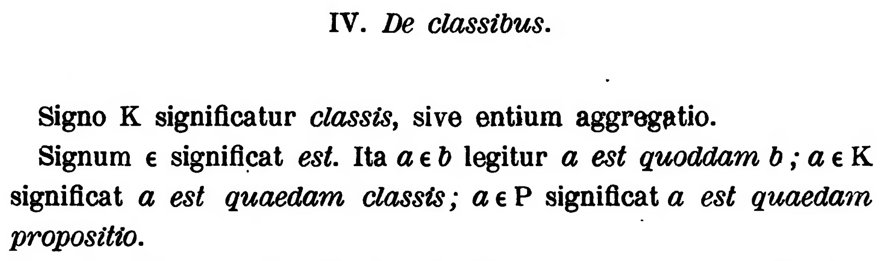
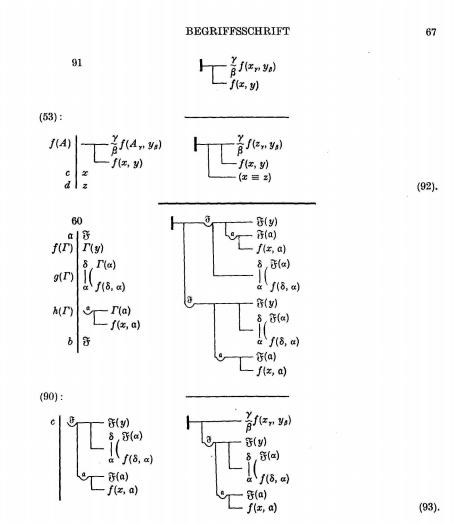

第2回
どの宝珠にも、ほかのすべての宝珠が映っている。「すべて」を一言で言うとは、どういうことか。
作：Bunyk／CC BY 4.0／Wikimedia Commons（File:Cubic Indra's net rendering, centered on a jewel.jpg、因陀羅網の想像図）
第0部「記号と言葉」の2回め。第1回が「あとで説明する」と予告した記号――集合の記号と、かつ・または・否定・ならば・同値・すべての・存在する――を、数値の例で手を動かしながら一つずつ説明する。最後に、第1回の「≡」「∝」「≤」を、この回の記号で書き直して回収する。
高校の「集合と論理」で習った内容も、省略せずに一度は書く。覚えている部分は読み飛ばしてよい。ただし、最後の第3節（すべての・存在する）は、高校では詳しく扱われないことが多く、大学の数学・工学の本ではそこから先の省略が急に増える。第3節は飛ばさないほうがよい。
新しい記号は、緑色の枠（記号）で「①読み方 ②日本語での意味 ③省略していない書き方 ④どこで出会うか」を書く。全部の記号は 記号索引 からも探せる。
最初に、この回で新しく説明する記号と、前の回（第1回）で説明済みで、この回でも使う記号の一覧を置く。「→」の先に説明がある。
| 記号 | 読み方 | ざっくりした意味 | 説明 |
|---|---|---|---|
| $\in\ \ \notin$ | 属する／属さない | 集合の要素である／ない | →1.2 |
| $\{\,\cdots\,\}$、$\{x\mid\cdots\}$ | 集合の書き方（外延・内包） | 要素を並べる／条件で決める | →1.3 |
| $\mathbb N,\mathbb Z,\mathbb Q,\mathbb R,\mathbb C$ | ナチュラル、ゼット、キュー、アール、シー | 自然数・整数・有理数・実数・複素数の全体 | →1.4 |
| $\emptyset$ | 空集合 | 要素が1つもない集合 | →1.5 |
| $\subseteq\ \subset\ \subsetneq$ | 部分集合 | 「〜の一部分（または全体）」 | →1.6 |
| $\cup$ | 和集合（カップ） | どちらかに入っているものの集まり | →1.7 |
| $\cap$ | 共通部分（キャップ） | 両方に入っているものの集まり | →1.7 |
| $\setminus$ | 差集合 | 前者から後者を除いたもの | →1.7 |
| $[a,b],\ (a,b),\ [a,b),\ (a,b]$ | 閉区間・開区間・半開区間 | 数直線上の「ひと続きの範囲」 | →1.8 |
| $\times$（直積）、$\mathbb R^n$ | 直積／アール・エヌ | 順序つきの組の全体 | →1.9 |
| $\land$ | かつ | 両方が正しい | →2.2 |
| $\lor$ | または | 少なくとも一方が正しい | →2.2 |
| $\lnot$ | でない（否定） | 正しさをひっくり返す | →2.2 |
| $\Rightarrow$ | ならば | 前が正しければ後ろも正しい | →2.3 |
| $\Leftrightarrow$ | 同値 | 前と後ろの正しさが一致する | →2.5 |
| $\forall$ | すべての／任意の | どの要素についても | →3.1 |
| $\exists$ | 存在する | 少なくとも1つある | →3.2 |
| $\exists!$ | ただ1つ存在する | ちょうど1つある | →3.3 |
| 記号 | 意味 | 説明（第1回） |
|---|---|---|
| $=$ | 左と右が同じ値（3つの顔） | 第1回 2.1 |
| $:=$ | 左の名前を右の式で決める | 第1回 2.2 |
| $\equiv$ | どんな値でも常に同じ | 第1回 2.3 |
| $\propto$ | 左は右の定数倍 | 第1回 2.5 |
| $\neq$ | 等しくない | 第1回 2.6 |
| $\lt\ \gt\ \le\ \ge$ | 大小の関係 | 第1回 2.6 |
| $x_1$（添字） | 名前に番号をつける | 第1回 4.1 |
| $x^2$（肩の数字） | 冪（べき） | 第1回 4.2 |
| $\cdots$ | 同じ規則で続く部分を省く | 第1回 4.5 |
| 式と関係式 | 名詞にあたるもの／文にあたるもの | 第1回 1.2 |
| 省略の段階（S0, S1, …） | 省略を1段ずつ並べる考え方 | 第1回 6.1 |
第1回では、$x+1=3$ という文が「$x$ が2のときだけ正しい」ことを見た。ところで、次の文は何を言っているのだろうか。
$$ x^2 \lt 4 $$
これは「$x$ の値しだいで正しさが変わる文（条件）」であり、第1回 1.3 の3番目の種類である。$x=1$ なら $1\lt 4$ で正しい。$x=3$ なら $9\lt 4$ で正しくない。では、「この文が正しくなる $x$ はどれか」と聞かれたとき、答えは1つの数ではなく、たくさんの数のまとまりになる（実際、$-2$ と $2$ のあいだのすべての実数になる）。
「たくさんのもののまとまり」を、一つの名前で呼べるようにする。それが集合である。これがないと、「条件を満たす $x$ の全体」を式の中で扱えない。
集合とは、「あるものが入っているか入っていないかが、はっきり決まっているものの集まり」のことである。集合に入っている一つ一つを、その集合の要素（元・げん）と呼ぶ。「入っているかどうかがはっきり決まる」という条件が大事で、「大きい数の集まり」は（どこからが大きいのか決まっていないので）集合にならない。
①読み方：$a\in A$ は「$a$ は $A$ に属する」「$a$ は $A$ の要素である」「$a$ は $A$ に入っている」。$a\notin A$ は「$a$ は $A$ に属さない」。
②日本語での意味：$a\in A$ は「$a$ は、集合 $A$ の要素の一つである」という主張（関係式＝文）。正しいか正しくないかが決まる。$a\notin A$ は、その否定。
③省略していない書き方：$\in$ 自体は省略形ではない（ギリシャ文字のイプシロン $\varepsilon$ ではなく、英語 Element の頭文字 E を崩した記号である）。$a\notin A$ は「『$a\in A$』という文が正しくない」の省略（第1回の $\neq$ が「『$=$』が正しくない」の省略だったのと同じ形：第1回 2.6）。
④どこで出会うか：すべての科目。「$x\in\mathbb R$」（$x$ は実数）、「$\boldsymbol v\in\mathbb R^3$」（$\boldsymbol v$ は3次元の数の組）、確率の「$\omega\in\Omega$」。
最小の具体例。集合 $A$ を「1, 2, 3, 4 の4つの数が入っているもの」とする。このとき、
$\in$ の左には「要素（ものの1つ）」、右には「集合（ものの集まり）」が来る。左右を逆にした「$A\in 3$」は文として成り立たない（3は集合ではなく、中を覗けないから）。
「$\in$ の左にも右にも、数が来てよい」と思ってしまうと、$3\in 3$ のような式を書いてしまう。$\in$ は左がもの、右が集まりという向きのある記号である。第1回で見た $=$（左右が対等）とは違う。
集合を式の中に書くには、2通りの書き方がある。
中括弧 $\{\ \}$ の中に、要素を並べて書く。
$$ A=\{1,\,2,\,3,\,4\} $$
ここの $=$ は、第1回 2.2 で見た「名前をつける」用法であり、省略せずに書けば $A:=\{1,2,3,4\}$ である。以後、集合に名前をつけるときは $:=$ を使う。
注意が3つある。
①読み方：$\{x\in A\mid P(x)\}$ は「$A$ の要素 $x$ のうち、条件 $P(x)$ を満たすもの全体の集合」。縦棒 $\mid$ は「ただし」「ここで」「such that」の意味で読む。
②日本語での意味：元になる集合 $A$ を先に言い、その中から、条件を満たすものだけを集めた集合。
③省略していない書き方：この記法は次の3つの部品でできている。「$x$（動かす文字）」「$\in A$（どの範囲を動かすか）」「$P(x)$（条件）」。
$\{x\in\mathbb R\mid x^2\lt 4\}$ なら、「実数 $x$ を動かし、$x^2\lt 4$ を満たすものを集める」。範囲 $\in\mathbb R$ を省いて $\{x\mid x^2\lt 4\}$ と書く本もある（このとき、どの範囲を動かしているかは読者が補う。省略の段階：すべての と同じ型の省略）。
④どこで出会うか：解の集合、定義域、確率の事象、領域の表し方（「$\{(x,y)\mid x^2+y^2\le 1\}$」は円板）。
縦棒のかわりにコロンを使う流派がある。$\{x\in\mathbb R : x^2\lt 4\}$ と $\{x\in\mathbb R\mid x^2\lt 4\}$ は同じ意味。この教材では縦棒 $\mid$ で統一する。また、縦棒 $\mid$ は後の回で「割り切れる」「絶対値」「条件つき確率」にも使われるので、どれかは文脈で判断する。
最小の具体例を手で確かめる。$B:=\{x\in\mathbb Z\mid x^2\lt 10\}$（$\mathbb Z$ は整数全体。1.4 で説明する）とする。整数を一つずつ入れて、条件 $x^2\lt 10$ が正しいかを見る。
| $x$ | $-4$ | $-3$ | $-2$ | $-1$ | $0$ | $1$ | $2$ | $3$ | $4$ |
|---|---|---|---|---|---|---|---|---|---|
| $x^2$ | $16$ | $9$ | $4$ | $1$ | $0$ | $1$ | $4$ | $9$ | $16$ |
| $x^2\lt 10$ は？ | × | ○ | ○ | ○ | ○ | ○ | ○ | ○ | × |
したがって $B=\{-3,-2,-1,0,1,2,3\}$（7個）。$x$ が $4$ 以上、または $-4$ 以下では $x^2\ge 16\gt 10$ となり、これより外側は調べなくてよい。
よく使う数の集まりには、専用の記号が決まっている。
①読み方：$\mathbb N$「エヌ（自然数全体）」、$\mathbb Z$「ゼット（整数全体）」、$\mathbb Q$「キュー（有理数全体）」、$\mathbb R$「アール（実数全体）」、$\mathbb C$「シー（複素数全体）」。二重線の文字を黒板太字（blackboard bold）という。手書きでは、縦線を二重にして書く。
②日本語での意味：それぞれ、次の数すべての集まり。
③省略していない書き方：たとえば $\mathbb N$ は、外延的に書けば $\{1,2,3,\cdots\}$。つまり記号1つで「長い集合の書き方」を折りたたんでいる。
④どこで出会うか：すべての科目。「$x\in\mathbb R$」は、文字 $x$ が動いてよい範囲の宣言。
日本の高校数学では $0$ を含めない（$\mathbb N=\{1,2,3,\cdots\}$）。情報科学や一部の数学書では $0$ を含める（$\mathbb N=\{0,1,2,\cdots\}$）。本によって違うので、$\mathbb N$ が出てきたら、その本の冒頭の宣言を確かめる。この教材では、$0$ を含めたいときは $\{0\}\cup\mathbb N$（$\cup$ は 1.7）や「$0$ 以上の整数」と、含めるかどうかを明示して書く。
また、「正の実数全体」を $\mathbb R_{gt 0}$、$\mathbb R^{+}$、$(0,\infty)$（区間：1.8）などと書く流派があり、$\mathbb R^{+}$ は 0 を含むかどうかも本による。この教材では $\{x\in\mathbb R\mid x\gt 0\}$ または $(0,\infty)$ と書く。
これらの集合には、包み込む関係がある。たとえば $3$ は、自然数でもあり、整数でもあり、有理数（$3=\dfrac{3}{1}$）でもあり、実数でもあり、複素数でもある。また $\dfrac12$ は有理数だが整数ではない。$\sqrt2$ は実数だが有理数ではない（有理数でないことの証明は本回では扱わない）。この「包み込む関係」を記号で書くのが、次の項である。
この入れ子の関係を、図にして見ておく（記号での書き方は 1.6 で説明する）。
①読み方：「くうしゅうごう」。
②日本語での意味：要素が1つもない集合。
③省略していない書き方：$\emptyset=\{\ \}$（中括弧の中に何も書かない）。$\varnothing$ と書く本もある（同じ意味）。
④どこで出会うか：「解がない」ことを「解の集合が $\emptyset$」と言うとき。共通部分が空であること（$A\cap B=\emptyset$）。
例：$\{x\in\mathbb R\mid x^2\lt 0\}$ は空集合。どんな実数も、二乗すれば $0$ 以上だから（$x=3$ で $9$、$x=-3$ で $9$、$x=0$ で $0$。負にならない）。
$\emptyset$ と $\{0\}$ は違う。$\{0\}$ は「$0$ という要素を1つ持つ集合」であり、空ではない。また $\emptyset$ と $\{\emptyset\}$ も違う（後者は「空集合を1つ要素に持つ集合」）。
動機：「$\mathbb Z$ は $\mathbb R$ の一部分だ」を記号で書きたい。
①読み方：$A\subseteq B$ は「$A$ は $B$ の部分集合である」「$A$ は $B$ に含まれる」。
②日本語での意味：$A$ のどの要素も、$B$ の要素である。
③省略していない書き方：$A\subseteq B$ は、「$A$ のすべての要素 $x$ について、$x\in B$ が成り立つ」の省略。後の第3節の記号を使えば、
$$ A\subseteq B\ :\Longleftrightarrow\ \forall x\,\bigl(x\in A\Rightarrow x\in B\bigr) $$
（$:\Longleftrightarrow$ は「左を右の意味と定める」。$\forall$ は 3.1、$\Rightarrow$ は 2.3 で説明するので、いまは日本語のほうを読めばよい。）
④どこで出会うか：定義域・値域（第3回）、部分空間（第15回）、事象の包含。
$\subset$ の意味は本によって2通りある。
この教材では、混乱を避けるため、$\subseteq$（等しい場合を含む）と $\subsetneq$（等しい場合を含まない）だけを使う。$\subset$ は、他の本を読むときのために、ここで読み方だけ示した。
最小の具体例。$A:=\{2,4\}$、$B:=\{1,2,3,4\}$ とする。
逆向きの $B\subseteq A$ は正しくない（$1\in B$ だが $1\notin A$）。
数の集合どうしでは、$\mathbb N\subseteq\mathbb Z\subseteq\mathbb Q\subseteq\mathbb R\subseteq\mathbb C$ と並ぶ（$\mathbb N$ は $1$ から始まる流派）。
どんな集合 $A$ についても、$\emptyset\subseteq A$ と $A\subseteq A$ が成り立つ。$\emptyset\subseteq A$ は、「$\emptyset$ の要素で $A$ に入っていないものは存在しない（そもそも要素がない）」から正しい。この「何もないから反例がない」という考えは、2.3 の「前提が偽のとき」と同じ型である。
2つの集合が等しいこと（$A=B$）は、「$A\subseteq B$ かつ $B\subseteq A$」と言い換えられる。つまり、「互いに相手に含まれる」。これを使って集合が等しいことを示すやり方は、演習の C 問題で使う。
動機：2つの集合から、新しい集合を作りたい。たとえば、2つの条件の「どちらかを満たす $x$」「両方を満たす $x$」。以降 $A:=\{1,2,3,4\}$、$B:=\{3,4,5\}$ を使って、手で確かめる。
①読み方：$A\cup B$ は「$A$ カップ $B$」「$A$ と $B$ の和集合」。
②日本語での意味：$A$ か $B$ の少なくとも一方に入っているものの集まり。
③省略していない書き方：$A\cup B:=\{x\mid x\in A\ \lor\ x\in B\}$（$\lor$ は 2.2 の「または」）。
④どこで出会うか：定義域を2つ合わせるとき、場合分けの結果をまとめるとき、確率の「$A$ または $B$」。
①読み方：$A\cap B$ は「$A$ キャップ $B$」「$A$ と $B$ の共通部分」。
②日本語での意味：$A$ にも $B$ にも両方に入っているものの集まり。
③省略していない書き方：$A\cap B:=\{x\mid x\in A\ \land\ x\in B\}$（$\land$ は 2.2 の「かつ」）。
④どこで出会うか：連立不等式の解（それぞれの解の共通部分）、確率の「$A$ かつ $B$」。
①読み方：$A\setminus B$ は「$A$ マイナス $B$」「$A$ から $B$ を除いた集合」。バックスラッシュ（斜め線）に見えるが、通常の斜線 $/$ とは違う記号である。
②日本語での意味：$A$ に入っていて、$B$ には入っていないものの集まり。
③省略していない書き方：$A\setminus B:=\{x\in A\mid x\notin B\}$。
④どこで出会うか：「0 を除く実数」を $\mathbb R\setminus\{0\}$ と書く（割り算の条件）。
$A=\{1,2,3,4\}$、$B=\{3,4,5\}$ で、一つずつ確かめる。
3と4で結果が違うので、$A\setminus B$ と $B\setminus A$ は一般に別物（$\cup$ と $\cap$ は左右を入れ替えても同じ）。
差集合を $A-B$ と書く本がある（意味は同じ）。また、「全体の集合 $U$ から $A$ を除いたもの」（補集合）を $A^{c}$、$\overline{A}$、$A'$、$U\setminus A$ などと書く流派がある。この教材では、補集合が必要なときは $U\setminus A$ と省略せずに書く。ここの $A'$ は、第1回のプライムの3つめの意味になるので注意する。
上の「③省略していない書き方」で見たとおり、$\cup$ は「または」、$\cap$ は「かつ」、$\setminus$ は「かつ〜でない」に対応している。この対応は 第2節 で、記号の読み方の裏づけとして何度も使う。見た目も似ている（$\cup$ と $\lor$、$\cap$ と $\land$）。
$A=\{1,2,3,4\}$、$B=\{3,4,5\}$ で、3つの演算が「どこ」を指すのかを図にする。
動機：実数の集合 $\{x\in\mathbb R\mid 1\le x\le 3\}$ のように、「ここからここまで」の集合はひんぱんに現れる。毎回この長い形を書くのは大変なので、短い記法ができた。
①読み方：$[a,b]$ は「$a$ から $b$ までの閉区間」。$(a,b)$ は「$a$ から $b$ までの開区間」。$[a,b)$ と $(a,b]$ は「半開区間」（半分だけ閉じて半分だけ開いている）。
②日本語での意味：$a\lt b$ とする。端点を含む側は角括弧 $[\ ]$、含まない側は丸括弧 $(\ )$ で表す。
| 記法 | 名前 | 集合の書き方（省略前） | 数直線の見え方 |
|---|---|---|---|
| $[a,b]$ | 閉区間 | $\{x\in\mathbb R\mid a\le x\le b\}$ | 両端を含む |
| $(a,b)$ | 開区間 | $\{x\in\mathbb R\mid a\lt x\lt b\}$ | 両端を含まない |
| $[a,b)$ | 半開区間 | $\{x\in\mathbb R\mid a\le x\lt b\}$ | 左端だけ含む |
| $(a,b]$ | 半開区間 | $\{x\in\mathbb R\mid a\lt x\le b\}$ | 右端だけ含む |
片側に終わりがないときは、$\infty$（無限大）を使う。$[a,\infty)=\{x\in\mathbb R\mid x\ge a\}$、$(-\infty,b)=\{x\in\mathbb R\mid x\lt b\}$。$\infty$ は実数ではなく、「果てしなく続く」ことを表す記号なので、側には必ず丸括弧 $)$ をつける（$[a,\infty]$ とは書かない）。$\infty$ の意味は第6回で詳しく扱う。
③省略していない書き方：上の表の「集合の書き方（省略前）」の列のとおり。詳しい段階は 省略の段階：区間 に示す。
④どこで出会うか：関数の定義域（第3回）、積分区間（第10回）、極限や連続の定義（第6回）、数値計算の刻み。
(1) フランス語圏の流派で育った本は、開いた端を外向きの角括弧で書く：$[a,b[$ は $[a,b)$ と同じ、$]a,b[$ は $(a,b)$ と同じ。日本の大学の教科書にも稀に出てくる。「角括弧が内を向いているか、外を向いているか」で見分ける。
(2) $(a,b)$ は、区間を意味する場合と、2つの数の組（平面上の点の座標、1.9）を意味する場合がある。たとえば $(1,3)$ は、文脈によって「$1$ より大きく $3$ より小さい実数全体」か「$x$ 座標が $1$、$y$ 座標が $3$ の点」。見分けるには、「いま何の集合・何の要素の話か」を見る（区間なら $(1,3)\subseteq\mathbb R$、点なら $(1,3)\in\mathbb R^2$）。
| 段階 | 書き方 | 何を省いたか | 省いても困らない理由 |
|---|---|---|---|
| S0 | $\{x\in\mathbb R\mid a\le x\ \land\ x\le b\}$ | （省略なし） | ― |
| S1 | $\{x\in\mathbb R\mid a\le x\le b\}$ | 「かつ」と2回目の $x$ を省いて、連ねて書く | 「$a\le x\le b$」は「$a\le x$ かつ $x\le b$」を表すと約束した |
| S2 | $[a,b]$ | 集合の書き方（括弧、$x\in\mathbb R$、縦棒、条件）を全部省く | 括弧の形（$[\ ]$ か $(\ )$）が、端点を含むかどうかを表すと約束した。$x$ の動く範囲は $\mathbb R$ と約束した |
S2 の「$x$ の動く範囲は $\mathbb R$」は、表に書かれない約束である。たとえば整数だけの範囲を言いたいときは、区間記法を使わずに $\{x\in\mathbb Z\mid 1\le x\le 3\}=\{1,2,3\}$ と書く。区間 $[1,3]$ に含まれる数は $\{1,2,3\}$ だけではなく、$2.5$ や $\sqrt2$ も含む。
数で手を動かす。
端点の確かめ：$x=2$ は $(2,5)$ に入っていない（$2\lt2$ は正しくない）ので入らない。$x=3$ は $[1,3]$ に入り、$(2,5)$ にも入る（$2\lt 3\lt 5$）ので入る。
もう一つ：$[0,2)\cup[2,3]$。$[0,2)$ は $2$ を含まず、$[2,3]$ は $2$ を含む。合わせると $2$ のところが埋まり、$[0,3]$。
区間の記法が、数直線上のどの範囲を表すのかを図にする。
動機：平面上の点を、「$x$ 座標と $y$ 座標の2つの数の組」で表したい。また、「サイコロを2回振った結果」のように、順番に意味のある組を集合として扱いたい。
①読み方：$A\times B$ は「$A$ 直積 $B$」。$\mathbb R^n$ は「アール・エヌ」「$n$ 次元の実数の組全体」。
②日本語での意味：$A\times B$ は、「$A$ の要素 $a$ と $B$ の要素 $b$ を、この順に並べた組 $(a,b)$ すべて」の集合。順番に意味がある（$(1,2)$ と $(2,1)$ は別の組）。$\mathbb R^n$ は、実数を $n$ 個並べた組 $(x_1,x_2,\cdots,x_n)$ すべての集合。
③省略していない書き方：
$$ A\times B:=\{(a,b)\mid a\in A\ \land\ b\in B\},\qquad \mathbb R^2:=\mathbb R\times\mathbb R,\qquad \mathbb R^3:=\mathbb R\times\mathbb R\times\mathbb R $$
肩の $n$ は、第1回で見た冪（$x$ を $n$ 回かける）とは違う意味で、「$\mathbb R$ を $n$ 回、直積した」の意味。$\mathbb R^2$ は「$\mathbb R$ の二乗」ではなく、「$\mathbb R\times\mathbb R$」と読む。
④どこで出会うか：座標平面・空間（$\mathbb R^2$、$\mathbb R^3$）、ベクトルの空間（第5回、第15回）、多変数関数の定義域（第3回、第11回）。
最小の具体例。$A:=\{1,2\}$、$B:=\{a,b\}$ のとき、$A\times B$ の要素を、左側の $1$ から順に書く。
逆の順の $B\times A$ は $\{(a,1),(a,2),(b,1),(b,2)\}$ で、$A\times B$ とは別の集合（要素の見た目が違う）。
$\mathbb R^2$ は、「$x$ 座標」と「$y$ 座標」の組のすべて、つまり座標平面そのもの。$(1,3)\in\mathbb R^2$ は「$x=1,\ y=3$ の点」を表す。$\mathbb R^n$ の要素を一つの文字で表したもの（ベクトル）の書き方は、第5回で扱う。
$\mathbb R^2$ を $\mathbb R\cdot\mathbb R$（実数どうしの積）と読んではいけない。実数どうしの積はやはり実数であり、$\mathbb R^2$ は実数の組のこと。なお、第1回 4.3 で、肩の数字には「括弧つきは冪ではない」という約束があったが、$\mathbb R^n$ の肩には括弧がない。それでも冪ではない。肩の数字が冪かどうかは、載っている文字（数か、集合か）で決まる。
PHOTO 1｜現実

1889年、ペアノは「〜である（est）」の頭文字 ε を、集合の要素を表す記号 ∈ の起こりとした。
Giuseppe Peano, Arithmetices principia (1889)／パブリックドメイン／Wikimedia Commons（File:First usage of the symbol ∈.png）
MITATE 1｜見立て
円の中に仏が並び、その円がさらに大きな円の中に並ぶ。集まりの中に、集まりがある。
金剛界八十一尊曼荼羅（Commons の作者表記は忠快 1160–1227、根津美術館）／パブリックドメイン／Wikimedia Commons（File:Kongokai 81son mandala.jpg）
第1回で、「関係式は正しいか正しくないかを言える文」だと確かめた（第1回 1.2）。数学ではこれと同じ意味で、正しい（真）か正しくない（偽）かが決まる文を命題と呼ぶ。たとえば、
以下では、命題や条件を $P,\ Q$ という文字で表す。$P$ は「ひとつの文」を代表する文字で、数の代表ではない。
この節では、2つの文 $P,\ Q$ から、新しい文を作る方法を学ぶ。これは日本語の「かつ」「または」「でない」「ならば」に対応する。日本語は曖昧なところがあるので、真偽表で意味をはっきり決める。真偽表とは、$P$ と $Q$ の真偽の4通りの組合せ（真真、真偽、偽真、偽偽）それぞれに対し、新しい文の真偽を書いた表である。以下、真を T、偽を F と書く。
①読み方：$P\land Q$ は「$P$ かつ $Q$」「$P$ アンド $Q$」。
②日本語での意味：$P$ も $Q$ も、両方真であるとき真、それ以外のとき偽。
③省略していない書き方：略記ではない。ただし、数学の本は $\land$ を省略して、カンマや連ねた不等式で書くことがある。$a\le x\le b$ は「$a\le x\ \land\ x\le b$」（省略の段階：区間）、「$x\gt 0,\ y\gt 0$」は「$x\gt 0\ \land\ y\gt 0$」。
④どこで出会うか：連立条件、共通部分 $\cap$ の定義（1.7）。
①読み方：$P\lor Q$ は「$P$ または $Q$」「$P$ オア $Q$」。
②日本語での意味：$P$ と $Q$ の少なくとも一方が真であるとき真。両方真のときも真である。
③省略していない書き方：略記ではない。ただし、$a\le b$ という記号が「$a\lt b\ \lor\ a=b$」の省略であることを、第1回 2.6 で予告した。3.7 でこれを書き戻す。
④どこで出会うか：場合分け、和集合 $\cup$ の定義（1.7）、不等式「$x\lt 0$ または $x\gt 1$」。
①読み方：$\lnot P$ は「$P$ でない」「$P$ の否定」「ノット $P$」。
②日本語での意味：$P$ が真なら偽、$P$ が偽なら真。真偽をひっくり返す。
③省略していない書き方：略記ではない。ただし、特定の関係式には専用の否定記号が用意されている：$\lnot(a=b)$ を $a\neq b$、$\lnot(a\in A)$ を $a\notin A$、$\lnot(a\le b)$ を $a\gt b$ と書く。これらは$\lnot$ を記号の中に折りたたんだ省略形である。
④どこで出会うか：「〜でない」の形の条件、背理法、対偶（2.4）。流派によって $\sim P$、$\overline{P}$、$P'$ と書く。
| $P$ | $Q$ | $P\land Q$（かつ） | $P\lor Q$（または） | $\lnot P$（でない） |
|---|---|---|---|---|
| T | T | T | T | F |
| T | F | F | T | F |
| F | T | F | T | T |
| F | F | F | F | T |
日本語の「または」は、「どちらか一方だけ」の意味（「ご飯またはパン」）で使われることがあるが、数学の $\lor$ は両方真でも真（上の表の1行目）。たとえば、$x=3$ のとき、「$x\gt 2\ \lor\ x\gt 1$」は両方真なので真である。
数で確かめる。$x=0.5$ として、「$0\le x\le 1$」（$=0\le x\ \land\ x\le 1$）と、その否定を調べる。
否定が真になるのは、$x=2$ のような（右にはみ出した）場合と、$x=-1$ のような（左にはみ出した）場合。つまり、$\lnot(0\le x\le 1)$ は「$x\lt 0\ \lor\ x\gt 1$」と同じになる。これを一般に書いたのが、次のド・モルガンの法則である。
$$ \lnot(P\land Q)\ \Leftrightarrow\ (\lnot P)\lor(\lnot Q),\qquad \lnot(P\lor Q)\ \Leftrightarrow\ (\lnot P)\land(\lnot Q) $$
（$\Leftrightarrow$ は 2.5 で説明する。いまは「左と右の真偽が、$P,Q$ のどの組合せでも一致する」と読む。）言葉で言うと、「『両方』の否定は『少なくとも一方でない』」「『少なくとも一方』の否定は『両方でない』」。
$\lnot(P\land Q)$ と $(\lnot P)\lor(\lnot Q)$ を、4通りの組合せそれぞれで計算する。
| $P$ | $Q$ | $P\land Q$ | $\lnot(P\land Q)$ | $\lnot P$ | $\lnot Q$ | $(\lnot P)\lor(\lnot Q)$ |
|---|---|---|---|---|---|---|
| T | T | T | F | F | F | F |
| T | F | F | T | F | T | T |
| F | T | F | T | T | F | T |
| F | F | F | T | T | T | T |
4行とも、第4列と第7列が一致している。もう一方の式も、同じ手順で確かめられる（演習の問で自分でやる）。
$\land$ や $\lor$ が複数並ぶとき、どちらを先に結ぶかの約束（優先順位）は本によって揺れる。この教材では、$\lnot$ を最優先、そのあと $\land$、$\lor$、最後に $\Rightarrow$、$\Leftrightarrow$ と読む（第1回の演算の優先順位の関係記号と同じ型）。ただし、曖昧になりそうなときは必ず括弧を書く（第1回 5.3 で見た、割り算の曖昧さと同じ考え方）。
動機：数学の定理や公式のほとんどは、「〜ならば〜」の形をしている。「$x\gt 2$ ならば $x^2\gt 4$」のように、前提の条件から結論を導く文である。
①読み方：$P\Rightarrow Q$ は「$P$ ならば $Q$」「$P$ は $Q$ を含意する」「$P$ implies $Q$」。$P$ を仮定（前件）、$Q$ を結論（後件）と呼ぶ。
②日本語での意味：「$P$ が真のときに、$Q$ が偽になることはない」という主張。
③省略していない書き方：次の真偽表のとおり。「$P$ が真で $Q$ が偽」のときだけ偽、それ以外は真。
$$ P\Rightarrow Q\ \Longleftrightarrow\ (\lnot P)\lor Q $$
④どこで出会うか：定理の主張、証明のすべて、条件の書き換え（「$x\gt 2$ ならば…」）、定義の中の条件。
| $P$ | $Q$ | $P\Rightarrow Q$ | $(\lnot P)\lor Q$ | 日常の例：「100点を取ったらおごる」 |
|---|---|---|---|---|
| T | T | T | T | 100点を取った。おごった。→ 約束は守られた。 |
| T | F | F | F | 100点を取った。おごらなかった。→ 約束違反。 |
| F | T | T | T | 100点を取っていない。それでもおごった。→ 約束は破られていない。 |
| F | F | T | T | 100点を取っていない。おごらなかった。→ 約束は破られていない。 |
この表で、3行目と4行目（$P$ が偽のとき）は、$Q$ が何であっても $P\Rightarrow Q$ は真である。ここが、最初につまずきやすい。理由は、「$\Rightarrow$ は『$P$ が真のときに $Q$ が偽になる例（反例）がない』という主張だ」と決めているため。$P$ が偽のときは、反例になりようがない。上の「おごる」の例のとおり、約束は破られていない（約束違反の証拠がない）から、「真」と数える。
数で手を動かす。$P$：$x\gt 2$、$Q$：$x^2\gt 4$ として、「$x\gt 2\Rightarrow x^2\gt 4$」を、いくつかの $x$ で確かめる。
| $x$ | $P$：$x\gt2$ | $x^2$ | $Q$：$x^2\gt4$ | $P\Rightarrow Q$ | 真偽表のどの行 |
|---|---|---|---|---|---|
| $3$ | T | $9$ | T | T | 1行目（T,T） |
| $-3$ | F | $9$ | T | T | 3行目（F,T） |
| $1$ | F | $1$ | F | T | 4行目（F,F） |
2行目の（T,F）、つまり「$x\gt 2$ なのに $x^2\gt 4$ でない」は、どんな $x$ でも起きない。この「起きない」ことが、「$x\gt 2\Rightarrow x^2\gt 4$ はすべての $x$ について真」の中身である。（「すべての」の記号は 第3節 で。）
逆の「$x^2\gt 4\Rightarrow x\gt 2$」はどうか。$x=-3$ を入れる。$x^2=9\gt 4$ は真、$x\gt 2$ は偽。（T,F）の行に当たるので、この文は偽。つまり $x=-3$ が反例。$P\Rightarrow Q$ を偽だと示すには、反例を1つ示せば足りる。
(1)「$P\Rightarrow Q$ が真ならば、$P$ のあとで必ず $Q$ が実際に起こる」とは限らない。$P$ が偽の行でも「真」である。
(2)「$\Rightarrow$ は原因と結果」ではない。「$2\lt 3\Rightarrow 3\lt 4$」のように、因果が何もない2つの文でも、$\Rightarrow$ でつなげる。数学の $\Rightarrow$ は、真偽表で決まる約束にすぎない。
$P\Rightarrow Q$ から作れる3つの文がある。
| 名前 | 形 | 例（$P$：$x\gt2$、$Q$：$x^2\gt4$） | 真偽 |
|---|---|---|---|
| 元の文 | $P\Rightarrow Q$ | $x\gt2\Rightarrow x^2\gt4$ | 真 |
| 逆 | $Q\Rightarrow P$ | $x^2\gt4\Rightarrow x\gt2$ | 偽（$x=-3$） |
| 裏 | $\lnot P\Rightarrow\lnot Q$ | $x\le2\Rightarrow x^2\le4$ | 偽（$x=-3$） |
| 対偶 | $\lnot Q\Rightarrow\lnot P$ | $x^2\le4\Rightarrow x\le2$ | 真 |
裏の確認：$x=-3$ は $x\le 2$ で真、$x^2=9\le 4$ は偽。（T,F）の行なので偽。対偶の確認：$x^2\le 4$ なら $-2\le x\le 2$ なので、$x\le 2$ が成り立つ。
元の文と対偶は、真偽が必ず一致する。真偽表で確かめる。
| $P$ | $Q$ | $P\Rightarrow Q$ | $\lnot Q$ | $\lnot P$ | $\lnot Q\Rightarrow\lnot P$ |
|---|---|---|---|---|---|
| T | T | T | F | F | T |
| T | F | F | T | F | F |
| F | T | T | F | T | T |
| F | F | T | T | T | T |
第3列と第6列は4行とも一致する。このおかげで、「$P\Rightarrow Q$ を直接示すのが難しいとき、対偶 $\lnot Q\Rightarrow\lnot P$ を示せばよい」という証明が使える。一方、逆と元の文は、一致するとは限らない（上の例では、元が真で、逆は偽）。
$P\Rightarrow Q$ が真のとき、次の2通りの言い方をする。
覚え方：矢印の根元（$P$）が十分、矢印の先（$Q$）が必要。
数の例：$P$：$x=2$、$Q$：$x^2=4$ とする。
「必要」と「十分」を取り違えやすい。「$x^2=4$ が成り立つことは、$x=2$ であるために必要」は正しい（$x=2$ なら必ず $x^2=4$ だから）。しかし「$x^2=4$ ならば $x=2$」とは言えない。必要条件を満たしても、目的の主張が成り立つとは限らない。
逆・裏・対偶の関係を、1枚の図にまとめる。
動機：$P\Rightarrow Q$ と $Q\Rightarrow P$ が両方成り立つとき、$P$ と $Q$ は「同じことを言っている」。これを短く書きたい。
①読み方：$P\Leftrightarrow Q$ は「$P$ と $Q$ は同値」「$P$ であるための必要十分条件は $Q$」「$P$ ならば $Q$、かつ $Q$ ならば $P$」「$P$ if and only if $Q$」。英語では iff と略されることがある。
②日本語での意味：$P$ と $Q$ の真偽が常に一致する。
③省略していない書き方：$$ P\Leftrightarrow Q\quad\text{は}\quad (P\Rightarrow Q)\ \land\ (Q\Rightarrow P)\quad\text{の省略} $$ 真偽表では、$P$ と $Q$ が同じ行（T,T）と（F,F）のときだけ真。
④どこで出会うか：定義（「〜であるとは〜のことである」を $\Leftrightarrow$ で書く）、定理の「必要十分」、式変形の連鎖（$x+1=3\Leftrightarrow x=2$）。
| $P$ | $Q$ | $P\Rightarrow Q$ | $Q\Rightarrow P$ | $P\Leftrightarrow Q$ |
|---|---|---|---|---|
| T | T | T | T | T |
| T | F | F | T | F |
| F | T | T | F | F |
| F | F | T | T | T |
数の例。「$x+1=3\Leftrightarrow x=2$」を確かめる。
これは、方程式を解く操作の「正体」を示している。各行の変形が同値（$\Leftrightarrow$）でつながっていれば、最後の行が答えの全部になる。一方、$x=2\Rightarrow x^2=4$ のように、ある行から次の行が $\Rightarrow$（片方向）でしか導けない変形（例：両辺を二乗する）を挟むと、求めた値の中に、元の式を満たさないもの（余分な解）が混じる可能性が出てくる。たとえば $x=2$ の両辺を二乗して $x^2=4$、そこから $x=\pm2$ と戻すと、$x=-2$ が混じる。
$\Rightarrow$ のかわりに $\to$ を、$\Leftrightarrow$ のかわりに $\leftrightarrow$ を使う論理学の本がある。数学の本では、$\to$ は「関数の矢印」（$f\colon A\to B$、第3回）や「極限の矢印」（$x\to a$、第6回）に使われるため、論理の矢印は二重線 $\Rightarrow$ を使うのが普通。この教材も二重線を使う。矢印の形ごとに意味が違うことに注意する。
第1節と第2節で出てきた記号は、次のようにぴったり対応している。（左の「集合の記号」の定義は、右の「論理の記号」を使って書ける、という関係。）
| 集合の言葉 | 論理の言葉 |
|---|---|
| $x\in A\cap B$ | $x\in A\ \land\ x\in B$（かつ） |
| $x\in A\cup B$ | $x\in A\ \lor\ x\in B$（または） |
| $x\in A\setminus B$ | $x\in A\ \land\ x\notin B$（かつ〜でない） |
| $A\subseteq B$ | $x\in A\Rightarrow x\in B$（ならば）が、すべての $x$ で成り立つ |
| $A=B$ | $x\in A\Leftrightarrow x\in B$（同値）が、すべての $x$ で成り立つ |
この対応のおかげで、「集合の等式」を示したいときは、「論理の言葉に直して、真偽表や同値変形で確かめる」ことができる。これは C 問題で使う。
$x\gt 2\Rightarrow x^2\gt 4$ という文を、もう一度見る。この文の中の $x$ には、まだ値が決まっていない。$x=3$ のときは真、$x=-3$ のときも真（2.3 の表）だった。では、この文は全体として真なのか偽なのか。
実は、この文は「$x$ にどんな実数を入れても真になる」のか、「真になる $x$ もある」のか、あるいは「真になる $x$ がない」のか、に書き分けないと、文全体の真偽が決まらない。この「どんな $x$ でも」「ある $x$ では」を表すのが、量化子である。
第1回では、この言い分けをせずに書く場面が何度も出てきた。「$(x+1)^2=x^2+2x+1$」（すべての $x$ で成り立つ）と、「$x+1=3$」（ある $x$ で成り立つ）は、見た目の等号が同じ形だったが、第1回 2.1 で「どちらの顔かは文脈から判断する」と書いた。量化子は、その「文脈」を記号にして書くものである。
①読み方：$\forall x\in A,\ P(x)$ は「すべての $A$ の要素 $x$ について、$P(x)$」「任意の $x\in A$ に対して $P(x)$」「フォーオール $x$ in $A$、$P(x)$」。記号は英語 All の頭文字 A を逆さにしたもの。
②日本語での意味：$A$ の要素どれを取っても、$P(x)$ が真。
③省略していない書き方：$A$ の要素が有限個で $a_1,a_2,\cdots,a_n$ なら、「$P(a_1)\ \land\ P(a_2)\ \land\ \cdots\ \land\ P(a_n)$」と同じ（全部「かつ」でつないだもの）。要素が無限個のときは、このように書き並べることができないので、$\forall$ を使う。
$P(x)$ は「文字 $x$ を含む条件」を表す書き方で、$x$ に値を入れると真偽の決まる命題になる（関数の $f(x)$ に似た書き方：第3回）。
④どこで出会うか：恒等式、定理の主張、極限の定義（第6回）、「すべての $x$ について連続」。
最小の具体例。$A:=\{1,2,3\}$ で、$P(x)$：$x\lt 4$ とする。
$P(x)$：$x\lt 3$ なら、「$1\lt 3$ かつ $2\lt 3$ かつ $3\lt 3$」。3つめが偽なので、全体が偽。$\forall$ の文を偽だと示すには、反例（$x=3$）を1つ見つければ十分。
無限個の例：$\forall x\in\mathbb R,\ x^2\ge 0$。実数をいくつか入れて試す（$x=-3,\,0,\,0.5,\,\sqrt2$ で $x^2=9,\,0,\,0.25,\,2$、どれも $0$ 以上）が、試しただけでは真だと示したことにならない。すべての実数について確かめられるとは限らないため、真を示すには、一般の $x$ で成り立つ理由（たとえば「実数は正か負か $0$ で、符号が同じものをかけると $0$ 以上」）が必要になる。
①読み方：$\exists x\in A,\ P(x)$ は「$A$ の要素 $x$ で、$P(x)$ を満たすものが存在する」「ある $x\in A$ があって $P(x)$」「イグジスツ $x$ in $A$、$P(x)$」。記号は英語 Exists の頭文字 E を裏返したもの。
②日本語での意味：$P(x)$ が真になる要素が、$A$ の中に少なくとも1つある（2つ以上あってもよい）。
③省略していない書き方：$A$ の要素が有限個で $a_1,\cdots,a_n$ なら、「$P(a_1)\ \lor\ P(a_2)\ \lor\ \cdots\ \lor\ P(a_n)$」と同じ（全部「または」でつないだもの）。
④どこで出会うか：方程式の解の存在、「$\propto$ の定数 $k$」、最大値・最小値の存在、極限の定義（第6回）。
最小の具体例。$A:=\{1,2,3\}$ で、$P(x)$：$x\gt 2$ とする。
$P(x)$：$x\gt 3$ なら、3つとも偽なので全体は偽。$\exists$ の文を真だと示すには、具体例を1つ見つければよい。偽だと示すには、$A$ のすべての要素で $P$ が偽であることを示す。
日本語の「ある」は「1つだけある」と受け取られがちだが、$\exists$ は「少なくとも1つ」である。「$\exists x\in\mathbb R,\ x^2=4$」は、解が $x=2$ と $x=-2$ の2つあっても真。「ちょうど1つ」と言いたいときは、次の $\exists!$ を使う。
$\forall$ と $\exists$ の違いを、6個の点で見る。
①読み方：$\exists!\,x\in A,\ P(x)$ は「$P(x)$ を満たす $x\in A$ がただ1つ存在する」。
②日本語での意味：$P(x)$ を満たす要素が、$A$ の中にちょうど1つある。
③省略していない書き方：
$$ \exists!\,x\in A,\ P(x)\quad:\Longleftrightarrow\quad \bigl(\exists x\in A,\ P(x)\bigr)\ \land\ \bigl(\forall x\in A,\ \forall y\in A,\ (P(x)\land P(y)\Rightarrow x=y)\bigr) $$
前半が「少なくとも1つ」（存在）、後半が「2つ取って両方 $P$ を満たすなら、実は同じもの」（一意性＝多くとも1つ）。
④どこで出会うか：連立方程式の解がただ1つ（第17回）、微分方程式の初期値問題の解の一意性（第28回）、逆行列・逆関数の存在（第3回、第16回）。
数で確かめる。
3番めの例が示すとおり、「どの集合の中で探すか」が違うと、真偽が変わる。範囲 $\in A$ を省略して書いてよいかどうかは、このことと関わる（省略の段階：すべての）。

$\forall$ と $\exists$ が2つ並んだとき、順番を入れ替えると別の文になる。これが大学の数学・工学で最もつまずく点の一つで、極限の定義（第6回）の ε-δ もこの形である。
$X:=\{1,2,3\}$、$Y:=\{1,2,3\}$ とする。条件 $P(x,y)$ を「$x\neq y$」とする。
同じ記号 $\forall,\exists$ と同じ条件 $x\neq y$ なのに、順番を変えただけで真と偽に分かれた。
$P(x,y)$：$x+y=0$ とする。
量化子は左から順に読み、あとから出てくる文字は、前に出た文字の値を知ったうえで選んでよいと考える。
したがって、$\exists y\,\forall x$ ならば $\forall x\,\exists y$ は成り立つ（$\Rightarrow$ は真）が、逆（$\forall x\,\exists y\Rightarrow\exists y\,\forall x$）は成り立たないことがある。
日本語で「どんな $x$ にもある $y$ が存在する」と言うと、「ある $y$」が $x$ ごとに違うのか、全員共通の1つなのかがわからない。記号で書くと、$\forall x\,\exists y$（$x$ ごとに違ってよい）と $\exists y\,\forall x$（共通の1つ）で、区別がつく。
動機：「すべての $x$ で $P(x)$ が真」という主張が誤りであることを言うには、どう書けばよいか。3.1 で見たとおり、反例を1つ見つければよい。つまり「$P(x)$ が偽になる $x$ が存在する」。
$$ \lnot\bigl(\forall x\in A,\ P(x)\bigr)\ \Leftrightarrow\ \exists x\in A,\ \lnot P(x),\qquad \lnot\bigl(\exists x\in A,\ P(x)\bigr)\ \Leftrightarrow\ \forall x\in A,\ \lnot P(x) $$
言葉で言うと、否定をかけると、$\forall$ と $\exists$ が入れ替わり、$P(x)$ は $\lnot P(x)$ になる。
2つめの式も同じ手順で確かめられる（$\lnot(\lor)$ が $\land$ に変わる）。
数で手を動かす。$A:=\{1,2,3,4\}$、$P(x)$：$x\lt 4$ とする。
二重の量化子の否定は、外側から順に1つずつ否定を内側に通す。たとえば、3.4 の (b) の1つめを例にする。
元の文が真なので、この否定は偽のはずである（実際、どの $x$ に対しても $y:=-x$ で $x+y=0$ となり、「すべての $y$ で $x+y\neq0$」は成り立たない）。
$\lnot\forall$ が $\exists\lnot$ と同じ意味になることを、6個の点で見る（3.5 の確かめの、点の図による言い直し）。
数学の本・授業・スライドでは、$\forall$ を書かないことが非常に多い。第1回の「恒等式」の省略（第1回 6.4）と同じ型で、段階を並べる。
| 段階 | 書き方 | 何を省いたか | 省いても困らない理由 |
|---|---|---|---|
| S0 | 日本語：「すべての実数 $x$ について、$x^2\ge0$ が成り立つ」 | （省略なし） | ― |
| S1 | $\forall x\in\mathbb R,\ x^2\ge0$ | 「すべての〜について」を記号 $\forall$ にまとめる | $\forall$ の定義（3.1） |
| S2 | $\forall x,\ x^2\ge0$ | 範囲 $\in\mathbb R$ を省く | この本で $x$ は実数と宣言してあれば、動く範囲は読者が補える |
| S3 | $x^2\ge0\quad(x\in\mathbb R)$ または $x^2\ge0$ for all $x$ | $\forall$ すら書かず、括弧書きか文末に回す | 文脈で「すべての」と読めると約束した |
| S4 | $x^2\ge0$ | 量化子も範囲も書かない | 「$x$ は何を動くのか」を読者が文脈から補うと約束した。最も多く使われ、最も困る |
S4 は、同じ見た目の文 $x+1=3$ とまったく区別がつかない。S4 を見たら、「これは『すべての $x$』なのか『ある $x$』なのか」を確かめる習慣をつける。判断の手がかりは、(i) $x$ が前の行で「求めたい未知数」になっていたか、(ii) 「公式」「法則」「恒等式」として載っていたか、(iii) 直前に「任意の $x$」「$x$ を固定する」といった宣言があったか。
量化子の宣言の省略：定理の文で、$\forall\varepsilon\gt0$ のように範囲を条件にして量化することもある。$\forall\varepsilon\gt 0,\ P(\varepsilon)$ は、S0 に戻せば「すべての正の実数 $\varepsilon$ について $P(\varepsilon)$」、つまり $\forall\varepsilon\in\{x\in\mathbb R\mid x\gt0\},\ P(\varepsilon)$。範囲を表す集合を、条件に置き換えて短くしている。
第1回に出てきた3つの記号は、この回で、折りたたまれた長い文として書き直せる。
第1回 2.3 では、$(x+1)^2\equiv x^2+2x+1$ を「すべての $x$ について、$(x+1)^2=x^2+2x+1$」と読むと説明した。いま $\forall$ で書ける。
| 段階 | 書き方 | 備考 |
|---|---|---|
| S0 | 「すべての実数 $x$ について、$(x+1)^2=x^2+2x+1$ が成り立つ」 | 日本語 |
| S1 | $\forall x\in\mathbb R,\ (x+1)^2=x^2+2x+1$ | $\forall$ と範囲つき（3.1） |
| S2 | $(x+1)^2\equiv x^2+2x+1$ | $\forall x\in\mathbb R$ を $\equiv$ に折りたたむ（第1回の S1） |
| S3 | $(x+1)^2=x^2+2x+1$ | $\equiv$ ですらなく $=$（第1回の S2） |
第1回の「省略の段階：恒等式」（第1回 6.4）のS0とS1の間に、記号 $\forall$ を使った形（上のS1）が入る。
第1回 2.5 では、$y\propto x$ を「ある定数 $k$ が存在して、$y=kx$」と読むと書いた。ここで $y$ が $x$ の関数として決まっているとき（すべての $x$ の値で $y$ が決まるとき）、量化子を全部書くと、
$$ y\propto x\quad:\Longleftrightarrow\quad \exists k\in\mathbb R,\ \forall x,\ y=kx $$
順序に注意する（3.4）。$\exists k$ が先で、$\forall x$ があと。つまり、定数 $k$ は1つに決めておいて、すべての $x$ で同じ $k$ を使う。数で確かめる。
つまり $\propto$ の省略前は、$\exists k\,\forall x$ の順序であり、$\forall x\,\exists k$ ではない。これが、比例の定義で順序が重要になる例である。
第1回 2.6 では、$a\le b$ を「$a\lt b$ または $a=b$」と予告した。いま $\lor$ で書ける。
$$ a\le b\quad:\Longleftrightarrow\quad (a\lt b)\ \lor\ (a=b) $$
数で確かめる：
2番めの例が、$\lor$ の「両方真のときも真」とは別の、「片方だけ真で全体が真」の例である。区間 $[a,b]$ の端点が含まれるのは、$a\le a$ が真だから（$a\lt a$ は偽だが $a=a$ は真）。
$C:=\{n\in\mathbb Z\mid 0\le n\le 10\ \land\ n\text{ は偶数}\}$ の要素を全部並べよ。また、$D:=\{n\in\mathbb Z\mid 6\le n\le 14\}$ として、$C\cap D$、$C\setminus D$ を求めよ。
解答
① $C$：$0$ から $10$ の整数のうち偶数を探す。$0,2,4,6,8,10$（1.3）。→ $C=\{0,2,4,6,8,10\}$。
② $D$：$6$ 以上 $14$ 以下の整数。→ $D=\{6,7,8,9,10,11,12,13,14\}$。
③ $C\cap D$：$C$ の要素を一つずつ $D$ に入っているか見る（1.7）。$0\in D$？ いいえ。$2\in D$？ いいえ。$4\in D$？ いいえ。$6\in D$？ はい。$8\in D$？ はい。$10\in D$？ はい。→ $C\cap D=\{6,8,10\}$。
④ $C\setminus D$：$C$ の要素のうち、$D$ に入っていないもの（1.7）。③ の「いいえ」の3つ。→ $C\setminus D=\{0,2,4\}$。
$I:=[-1,2)$、$J:=(0,3]$ のとき、$I\cap J$ と $I\cup J$ を区間で表せ。
解答
① 省略前に戻す（省略の段階：区間）。$I=\{x\in\mathbb R\mid -1\le x\lt 2\}$、$J=\{x\in\mathbb R\mid 0\lt x\le 3\}$。
② 共通部分：両方満たす（かつ）。左端：$x\ge-1$ と $x\gt0$ を両方 → $x\gt0$（強いほう）。右端：$x\lt2$ と $x\le3$ を両方 → $x\lt2$（強いほう）。→ $0\lt x\lt 2$、すなわち $I\cap J=(0,2)$。
③ 和集合：どちらかを満たす（または）。左端：$-1$ から始まる（$-1\in I$）。右端：$3$ まで（$3\in J$）。途中に隙間はあるか。$I$ は $2$ の直前まで、$J$ は $0$ の直後から $3$ まで続くので、$0\lt x\lt 2$ で重なっていて隙間はない。→ $I\cup J=[-1,3]$。
④ 端点の確かめ。$-1\in I\cup J$：$-1\in I$ だから、はい。$3\in I\cup J$：$3\in J$ だから、はい。$2\in I\cup J$：$2\notin I$ だが $2\in J$（$0\lt2\le3$）だから、はい。→ $[-1,3]$ で矛盾しない。
次の文の真偽を答え、否定を $\lnot$ を使わずに（専用の否定記号 $\neq,\ \lt,\ \ge$ などで）書け。
(1) $\forall x\in\mathbb R,\ x^2\gt 0$ (2) $\exists x\in\mathbb R,\ x^2=-1$ (3) $\forall x\in\mathbb R,\ \exists y\in\mathbb R,\ y\gt x$
解答
① (1)：$x=0$ を入れる。$0^2=0$ で、$0\gt0$ は偽。反例が1つあるので（3.1）、全体は偽。否定は 3.5 により、$\forall\to\exists$、$x^2\gt0$ の否定は $x^2\le0$。→ $\exists x\in\mathbb R,\ x^2\le0$（$x=0$ で真）。
② (2)：$x^2=-1$ となる実数を探す。どんな実数も二乗すると $0$ 以上（1.5 の例）で、$-1\lt0$ なので一致しない。→ 偽（複素数 $\mathbb C$ の範囲なら $x=i$ で真になるが、$\mathbb R$ では偽）。否定は $\exists\to\forall$、$x^2=-1$ の否定は $x^2\neq-1$。→ $\forall x\in\mathbb R,\ x^2\neq-1$。
③ (3)：$x$ を決めたあとで $y$ を選ぶ（3.4）。$y:=x+1$ とすれば $y\gt x$。→ 真。否定は外側から順に通す。$\lnot(\forall x\,\exists y\,(y\gt x))$ → $\exists x\,\lnot(\exists y\,(y\gt x))$ → $\exists x\,\forall y\,\lnot(y\gt x)$ → $\exists x\in\mathbb R,\ \forall y\in\mathbb R,\ y\le x$。
確認：この否定は「最大の実数 $x$ が存在する」と言っている。そんな実数はない（どんな $x$ にも $y=x+1$ がある）ので偽。元の文は真だったので、否定が偽で整合する。
$x$ は実数とする。次の □ に「必要条件」「十分条件」「必要十分条件」「どちらでもない」のどれが入るか。
(1) $x\gt3$ は $x\gt1$ であるための □。 (2) $x^2=9$ は $x=3$ であるための □。 (3) $x\ge2$ は $x\gt2$ であるための □。
解答
① (1)：$x\gt3\Rightarrow x\gt1$ は真（$3\gt 1$ なので）。逆 $x\gt1\Rightarrow x\gt3$ は、$x=2$ で偽（$2\gt1$ は真、$2\gt3$ は偽）。→ 矢印の根元 $x\gt3$ は十分。答：十分条件。
② (2)：$x^2=9$ を $P$、$x=3$ を $Q$ とすると、$P\Rightarrow Q$ は偽（$x=-3$）、$Q\Rightarrow P$ は真（$3^2=9$）。$Q\Rightarrow P$ の矢印の先が $P$ なので、$P$ は $Q$ の必要条件。答：必要条件。
③ (3)：$x\ge2$ を $P$、$x\gt2$ を $Q$ とする。$P\Rightarrow Q$：$x=2$ で $P$ が真、$Q$ が偽なので偽。$Q\Rightarrow P$：$x\gt2$ なら $x\ge2$（$\gt$ は $\ge$ の特別な場合）で真。→ $P$ は $Q$ の必要条件。答：必要条件。
$A\cup B$：$A$ の要素 $1,2,3,4,5$ に、$B$ の要素のうち $A$ にないもの $6$ を加える。→ $\{1,2,3,4,5,6\}$。
$A\cap B$：$A$ の要素のうち $B$ にもあるもの。$2$ と $4$。→ $\{2,4\}$。
$A\setminus B$：$A$ の要素のうち $B$ にないもの。$1,3,5$。→ $\{1,3,5\}$。
$B\setminus A$：$B$ の要素のうち $A$ にないもの。$6$ だけ。→ $\{6\}$。
(1) $\{x\in\mathbb R\mid 2\le x\le5\}$。(2) $\{x\in\mathbb R\mid 2\lt x\lt5\}$。(3) $\{x\in\mathbb R\mid 2\le x\lt5\}$。(4) $\{x\in\mathbb R\mid x\le3\}$（左側は果てしなく続くので、下限の条件がない。$\infty$ の側は必ず丸括弧）。
（1.8 の表）
(1) 「すべての実数 $x$ について、$x$ の二乗は $0$ 以上である」。
(2) 「二乗が $9$ になる自然数 $n$ が存在する」（$n=3$ がその例）。
(3) 「$x$ が $2$ より大きいならば、$x$ は $1$ より大きい」。
4通りの組合せ（$P,Q$）で、$\lnot(P\lor Q)$ と $(\lnot P)\land(\lnot Q)$ を計算する。
| $P$ | $Q$ | $P\lor Q$ | $\lnot(P\lor Q)$ | $\lnot P$ | $\lnot Q$ | $(\lnot P)\land(\lnot Q)$ |
|---|---|---|---|---|---|---|
| T | T | T | F | F | F | F |
| T | F | T | F | F | T | F |
| F | T | T | F | T | F | F |
| F | F | F | T | T | T | T |
第4列と第7列が全行で一致する。→ 同値。
(1) $x=1$ のとき $y=3$（$1+3=4$）。$x=2$ のとき $y=2$（$2+2=4$）。$x=3$ のとき $y=1$（$3+1=4$）。どの $x$ にも相手の $y$ がある。→ 真。
(2) $y=1$ を試す：$x=1$ で $1+1=2\neq4$。失敗。$y=2$：$x=1$ で $3\neq4$。失敗。$y=3$：$x=1$ で $4$ だが、$x=2$ で $5\neq4$。失敗。どの $y$ もだめ。→ 偽。
(1) の $y$ は $x$ ごとに違った（3.4）。(2) は共通の $y$ が1つ必要なので成り立たない。
(1) 否定：$\exists x\in\mathbb R,\ x^2\lt x$。元の文は、$x=0.5$ で $x^2=0.25\lt0.5=x$ なので反例がある。→ 元は偽、否定は真。
(2) 否定：$\forall x\in\mathbb R,\ x^2\ge0$。→ 元は偽（二乗は $0$ 以上）、否定は真。
(3) まず外側の $\forall$ を通す：$\exists x\in\mathbb R,\ \lnot(x\gt0\Rightarrow x^2\gt0)$。$\lnot(P\Rightarrow Q)$ は、「$P$ は真で $Q$ は偽」（2.3 の表で偽になる唯一の行）なので、$P\land\lnot Q$。→ $\exists x\in\mathbb R,\ (x\gt0\ \land\ x^2\le0)$。元の文は、$x\gt0$ なら $x^2\gt0$ なので真。否定は偽。
(1) $x=0\Rightarrow xy=0$ は真。逆 $xy=0\Rightarrow x=0$ は、$x=1,\ y=0$ で偽。→ $xy=0$ は「$x=0$」の必要条件。
(2) 「$x=0$ かつ $y=0$」ならば $x^2+y^2=0$ は真。逆：$x^2+y^2=0$ で、$x^2\ge0$ と $y^2\ge0$ の和が $0$ になるには、両方とも $0$ が必要なので、$x=0$ かつ $y=0$。逆も真。→ 必要十分条件。
(3) $x\gt y\Rightarrow x^2\gt y^2$：$x=1,\ y=-2$ で $1\gt-2$ は真、$1\gt4$ は偽。偽。逆 $x^2\gt y^2\Rightarrow x\gt y$：$x=-2,\ y=1$ で $4\gt1$ は真、$-2\gt1$ は偽。偽。→ どちらでもない。
$$ \forall\varepsilon\gt0,\ \exists\delta\gt0,\ \forall x\in\mathbb R,\ \bigl(x\in(a-\delta,\,a+\delta)\ \Rightarrow\ f(x)\in(f(a)-\varepsilon,\,f(a)+\varepsilon)\bigr) $$
(1) 量化子を、順に日本語で読め。(2) 否定を、$\lnot$ を使わずに書け。(3) $\forall\varepsilon\gt0\ \exists\delta\gt0$ の順序を入れ替えた $\exists\delta\gt0\ \forall\varepsilon\gt0$ は何を意味するか。(1) 「どんな正の数 $\varepsilon$ に対しても、（その $\varepsilon$ に応じて）ある正の数 $\delta$ が存在して、すべての実数 $x$ について、$x$ が $a$ から $\delta$ 未満の距離にある（$a-\delta\lt x\lt a+\delta$）ならば、$f(x)$ は $f(a)$ から $\varepsilon$ 未満の距離にある」。$\delta$ は $\varepsilon$ のあとで選ぶので、$\varepsilon$ ごとに違ってよい（3.4）。
(2) 外側から順に通す（3.5）。$\forall\varepsilon\to\exists\varepsilon$、$\exists\delta\to\forall\delta$、$\forall x\to\exists x$、最後に $\lnot(P\Rightarrow Q)$ を $P\land\lnot Q$ に（問7(3)）。→
$\exists\varepsilon\gt0,\ \forall\delta\gt0,\ \exists x\in\mathbb R,\ \bigl(x\in(a-\delta,a+\delta)\ \land\ f(x)\notin(f(a)-\varepsilon,f(a)+\varepsilon)\bigr)$。
読み：「ある $\varepsilon$ があって、どんなに小さい $\delta$ をとっても、$a$ の近く（$\delta$ 未満）にありながら、$f(x)$ が $f(a)$ から $\varepsilon$ 以上離れる $x$ がある」。これが「連続でない」の中身。
(3) $\exists\delta\gt0,\ \forall\varepsilon\gt0,\ \cdots$ は、1つの $\delta$ を先に決めて、どんなに小さな $\varepsilon$ に対しても、$\delta$ の範囲の $x$ で $f(x)$ が $f(a)$ から $\varepsilon$ 未満の距離に入る、という意味。$\varepsilon$ をどれだけ小さくしても同じ $\delta$ で成り立つとなると、$\delta$ の範囲の $x$ で $f(x)=f(a)$ のはず（$f(x)$ が $f(a)$ と少しでも違えば、その差より小さい $\varepsilon$ をとれるので）。つまり、$a$ の近くで $f$ が定数、という非常に強い主張になる。順序が違うだけで、まったく別の文である。
数値の確かめ：左辺。$B\cup C=\{2,3,4\}$。$A\cap\{2,3,4\}=\{2,3\}$。右辺。$A\cap B=\{2\}$、$A\cap C=\{3\}$。$\{2\}\cup\{3\}=\{2,3\}$。両辺とも $\{2,3\}$ で一致。
一般の場合：$X=Y$ を示すには、$X\subseteq Y$ と $Y\subseteq X$ を示す（1.6）。ここでは、各行を同値（$\Leftrightarrow$）でつなぐので、一度で両方向が示せる。任意の $x$ について、
どの $x$ についても1行目と6行目が同値なので、2つの集合の要素が一致する。→ 両辺は等しい。
省略前：$(\exists x,\ P(x))\ \land\ (\forall x\,\forall y,\ (P(x)\land P(y)\Rightarrow x=y))$。「かつ」の否定は、ド・モルガン（2.2）により「または」。
(i) $\lnot(\exists x,\ P(x))$、すなわち $\forall x,\ \lnot P(x)$：「$P(x)$ を満たす $x$ が1つもない」。
(ii) $\lnot(\forall x\,\forall y,\ (P(x)\land P(y)\Rightarrow x=y))$、すなわち $\exists x\,\exists y,\ (P(x)\land P(y)\land x\neq y)$：「$P$ を満たす互いに異なる $x,y$ が2つ以上ある」。
例：$P(x)$：$x^2=4$ は、$x=2$ と $x=-2$（$2\neq-2$）があるので (ii)。$P(x)$：$x^2=-1$ は、実数の解が1つもないので (i)。